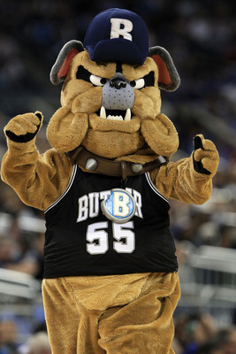

Are you interested in being one of our Hink mascot performers? If so, try-outs will be held on Sunday, 9/24 at 3:00 PM, and Monday, 9/25 at 9:00 PM at Hinkle Fieldhouse for a chance to join our crew! For more information, Contact Head Cheer & Mascot Coach, Jamie Troyer or fill out the form. Go Dawgs!
Over the years, Butler University students-and even staffers on occasion- have served as the costumed bulldog mascot. Originally known as the "Butler Bulldog," and now "Hink," University records indicate that the first Bulldog mascot costume appeared at a football game in 1922 and was worn by a female student.
The look of the bulldog costume evolved naturally, and today's Hink costume is derived from a head and suit designed and manufactured by the Walt Disney Co. more than 20 years ago.
The current Hink costume was acquired in 2009 after the previous version was stolen and vandalized in the summer of that year after nearly a decade of use. The case of the missing mascot costume case garnered much media and public attention which not only assisted in justice being served, but also initiated a contest to name Butler's costumed Bulldog.
The name "Hink" was chosen in honor of Butler legend and former athletic director, basketball, football, and baseball coach Paul D. "Tony" Hinkle.
To inquire about Hink's schedule and availability for appearances, please contact Butler University Spirit Coordinator Jamie Troyer or 317-940-9623.